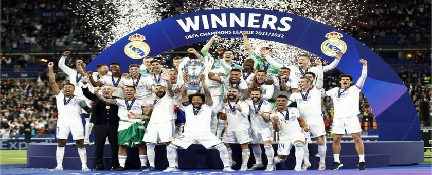
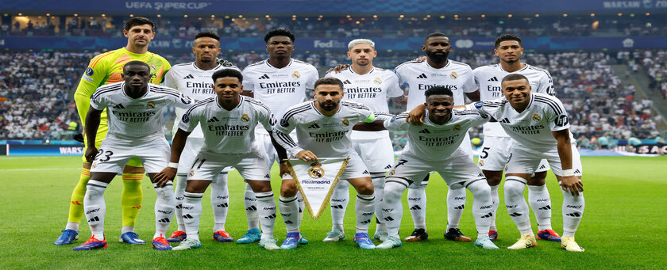
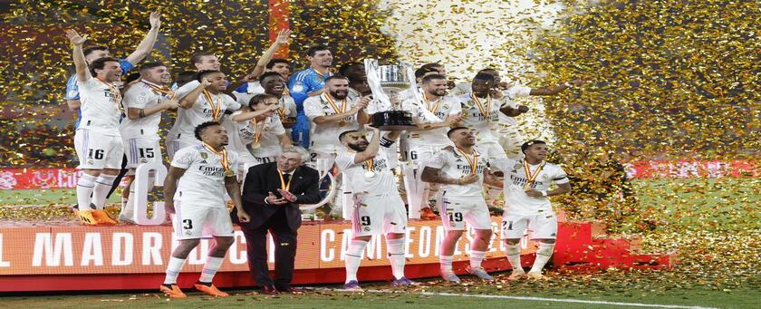

El Real Madrid tiene todo para ganar la Champions: una plantilla
equilibrada, jugadores en gran momento como Vinícius y Bellingham, y
la experiencia de veteranos como Modrić y Kroos. Además, la
dirección de Ancelotti aporta calma y estrategia, lo que junto a su
histórica mentalidad ganadora convierte al equipo en un claro
favorito. La mística del Madrid en Champions es única; su historia y
confianza en momentos decisivos suelen marcar la diferencia. Este
año, con un equipo fuerte y bien dirigido, los merengues tienen todo
a su favor para levantar la "Orejona" una vez más.

La dirección de Carlo Ancelotti es otro factor clave en la lucha por
el título. Su habilidad para gestionar la presión y motivar a sus
jugadores en los momentos críticos hace que el Real Madrid sea un
rival difícil de superar. Con su historia de éxitos y el hambre de
conquistar La Liga, el equipo tiene todas las herramientas para
quedarse con el título esta temporada.

El Real Madrid es favorito para ganar la Copa del Rey gracias a su plantilla sólida y la dirección estratégica de Ancelotti. Con figuras en excelente momento como Bellingham y Vinícius, junto a la experiencia de veteranos como Modrić y Kroos, el equipo tiene lo necesario para enfrentar y superar a cualquier rival en el torneo. La mentalidad ganadora del club y su calidad en todas las líneas los posicionan como fuertes candidatos al título.